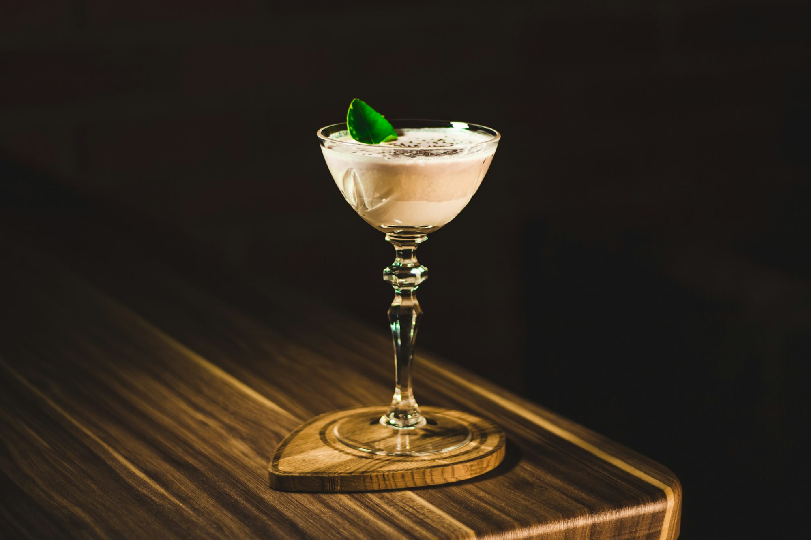

mealova.site
Soups Cuisine Discover the Taste charm Vegan of pet-friendly cafés Dining Seafood that Cooking Flavor welcome furry companions, creating Ingredient a Non-veg Snacks unique environment for both pets Beverages and Vegetarian their Desserts Recipe Dish owners. MealIn recent years, pet-friendly cafés have gained popularity, offering delightful spaces where animal lovers can enjoy a relaxing cup of coffee or tea in the company of their beloved pets. These cafés create a welcoming atmosphere for both humans and animals, blending the comforts of a traditional café with the joy of having pets around. The concept of pet-friendly cafés is simple yet impactful: they provide a space where people can Flavor unwind, socialize, and indulge in delicious treats while their furry friends lounge by their sides. The moment you step into a pet-friendly café, you are often greeted by the joyful barks or playful meows of pets enjoying the space. Many of these cafés feature designated areas for pets, complete with cozy cushions, toys, and even water bowls, ensuring that your companion feels right at home. The ambiance is often relaxed, making it an ideal spot for pet Snacks owners to enjoy their time without the worry of leaving their pets behind. One of the standout features of pet-friendly cafés is the sense of community they foster. These spaces naturally attract like-minded individuals who share a passion for animals, creating opportunities for social interaction. Pet owners often strike up conversations about their furry friends, exchanging stories, tips, and even arranging playdates. This camaraderie among pet lovers can lead to lasting friendships and a strong sense of belonging, making the café experience even more enriching. The menu offerings in pet-friendly cafés are often designed with both humans and pets in mind. While patrons can enjoy a variety of delicious food and drink options, many cafés also provide pet-friendly treats, such as homemade dog biscuits or catnip-infused snacks. This thoughtful inclusion allows pet owners to indulge their pets alongside themselves, creating a joyful shared experience. The combination of tasty human fare and delightful pet snacks enhances the overall atmosphere, ensuring that everyone leaves happy. Additionally, many pet-friendly cafés host special events that cater to both pets and their owners. From puppy parties and adoption events to themed gatherings, these activities provide a fun way to engage with the community while enjoying the company of pets. Such events often attract a diverse crowd, showcasing different breeds and fostering a spirit of inclusivity among animal lovers. The rise of social media has also played Vegetarian a significant role in the popularity of pet-friendly cafés. With platforms like Instagram showcasing adorable Vegan pet photos and heartwarming stories, cafés that welcome pets have found a vibrant online presence. Patrons often share their experiences, capturing the joyful moments spent with their furry companions in these welcoming spaces. This digital engagement not only promotes the café but also inspires others to explore pet-friendly options, leading to increased foot traffic and a broader community. The pet-friendly café trend is also contributing to a greater awareness of animal welfare. Many cafés partner with local shelters and rescue organizations to promote adoptions and support animal-related causes. By hosting adoption events or donating a portion of their profits to animal welfare organizations, these cafés play an Taste essential role in giving back to the community. This commitment to social responsibility resonates with patrons who value ethical practices and wish to support businesses that prioritize animal well-being. As more people become conscious of the benefits of having pets in their lives, the demand for pet-friendly spaces is likely to grow. The unique charm of pet-friendly cafés lies not only in their welcoming atmosphere but also in the joy and companionship that pets bring to our lives. These establishments create an environment where both humans and animals can thrive, fostering a sense of connection and happiness. In a fast-paced world, pet-friendly cafés remind us to slow down and appreciate the simple pleasures of life—whether it's enjoying a coffee with a friend or watching our pets play and explore. In conclusion, pet-friendly cafés represent a delightful fusion of culinary enjoyment and the joy of companionship. By providing spaces that celebrate the bond between pets and their owners, these cafés create unique environments that enrich our lives. With a focus on community, inclusivity, and social responsibility, pet-friendly cafés are not just places to grab a drink; they are vital hubs for animal lovers. As this trend continues to flourish, we can expect to see more cafés embracing Non-veg the spirit of pet-friendliness, inviting us all to Desserts share in the joy of good company—both human and furry.
February 08, 2025
Sophie Miller